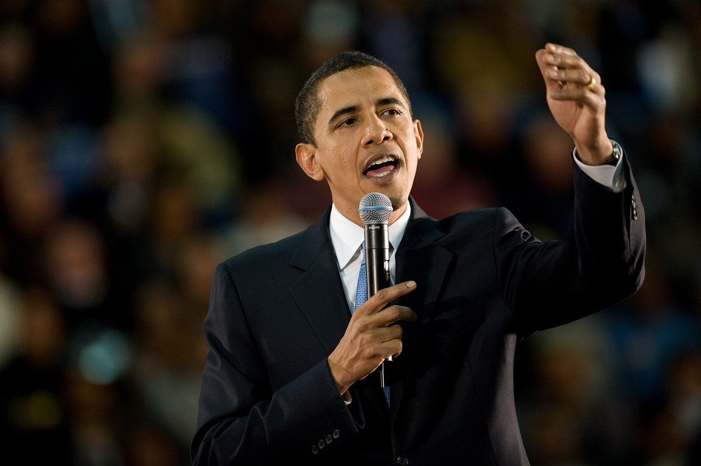
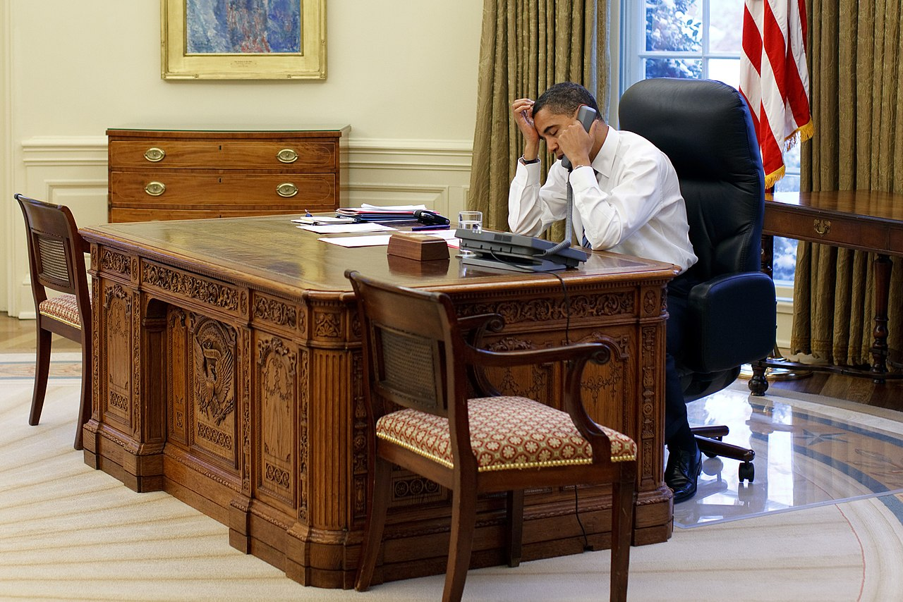
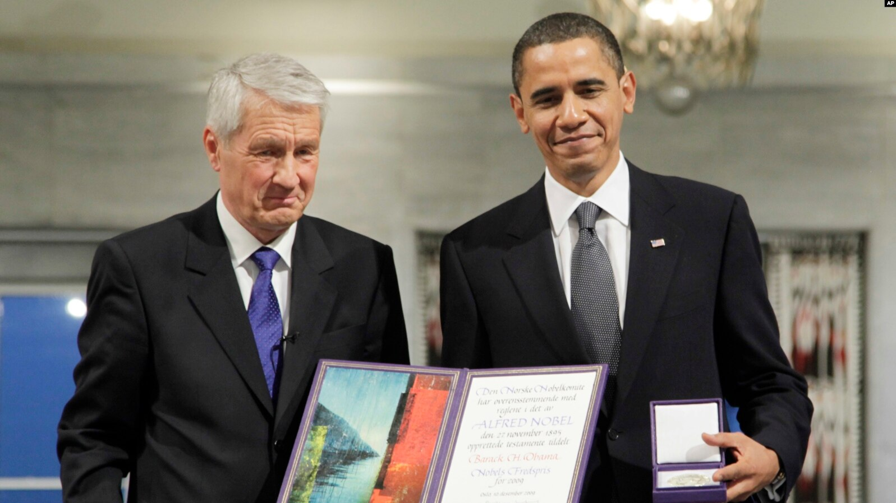

YES WE CAN
Barack Obama, in full Barack Hussein Obama II, (born August 4, 1961, Honolulu, Hawaii, U.S.), 44th president of the United States (2009–17) and the first African American to hold the office. Before winning the presidency, Obama represented Illinois in the U.S. Senate (2005–08). He was the third African American to be elected to that body since the end of Reconstruction (1877). In 2009 he was awarded the Nobel Peace Prize “for his extraordinary efforts to strengthen international diplomacy and cooperation between peoples.” Obama's father, Barack Obama, Sr., was a teenage goatherd in rural Kenya, won a scholarship to study in the United States, and eventually became a senior economist in the Kenyan government. Obama’s mother, S. Ann Dunham, grew up in Kansas, Texas, and Washington state before her family settled in Honolulu. In 1960 she and Barack Sr. met in a Russian language class at the University of Hawaii and married less than a year later. When Obama was age two, Barack Sr. left to study at Harvard University; shortly thereafter, in 1964, Ann and Barack Sr. divorced. (Obama saw his father only one more time, during a brief visit when Obama was 10.) Later Ann remarried, this time to another foreign student, Lolo Soetoro from Indonesia, with whom she had a second child, Maya. Obama lived for several years in Jakarta with his half sister, mother, and stepfather. While there, Obama attended both a government-run school where he received some instruction in Islam and a Catholic private school where he took part in Christian schooling. He returned to Hawaii in 1971 and lived in a modest apartment, sometimes with his grandparents and sometimes with his mother (she remained for a time in Indonesia, returned to Hawaii, and then went abroad again—partly to pursue work on a Ph.D.—before divorcing Soetoro in 1980). For a brief period his mother was aided by government food stamps, but the family mostly lived a middle-class existence. In 1979 Obama graduated from Punahou School, an elite college preparatory academy in Honolulu
In 1996 he was elected to the Illinois Senate, where, most notably, he helped pass legislation that tightened campaign finance regulations, expanded health care to poor families, and reformed criminal justice and welfare laws. In 2004 he was elected to the U.S. Senate, defeating Republican Alan Keyes in the first U.S. Senate race in which the two leading candidates were African Americans. While campaigning for the U.S. Senate, Obama gained national recognition by delivering the keynote address at the Democratic National Convention in July 2004. The speech wove a personal narrative of Obama’s biography with the theme that all Americans are connected in ways that transcend political, cultural, and geographical differences. The address lifted Obama’s once obscure memoir onto best-seller lists, and, after taking office the following year, Obama quickly became a major figure in his party. A trip to visit his father’s home in Kenya in August 2006 gained international media attention, and Obama’s star continued ascending. His second book, The Audacity of Hope (2006), a mainstream polemic on his vision for the United States, was published weeks later, instantly becoming a major best seller. In February 2007 he announced at the Old State Capitol in Springfield, Illinois, where Abraham Lincoln had served as a state legislator, that he would seek the Democratic Party’s presidential nomination in 2008. (For coverage of the 2008 election, see United States Presidential Election of 2008.)
In 2012, he was reelected over former Massachusetts Governor Mitt Romney by 332 to 206 electoral votes. The Middle East remained a key foreign policy challenge. Obama had overseen the killing of Osama bin Laden, but a new self-proclaimed Islamic State arose during a civil war in Syria and began inciting terrorist attacks. Obama sought to manage a hostile Iran with a treaty that hindered its development of nuclear weapons. The Obama administration also adopted a climate change agreement signed by 195 nations to reduce greenhouse gas emissions and slow global warming.
Barack H. Obama, the 44th President of the United States, had been in power for less than eight months when he was awarded the Nobel Peace Prize for 2009. Among the reasons it gave, the Nobel Committee lauded Obama for his “extraordinary efforts to strengthen international diplomacy and cooperation between peoples”. Emphasis was also given to his support - in word and deed - for the vision of a world free from nuclear weapons.
